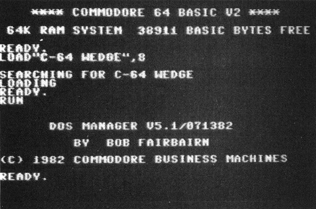

Das DOS 5.1 auf der Demo-Diskette
Einsteiger wissen meist gar nicht, was sie mit dem Programm »DOS 5.1« auf ihrer Demo-Diskette alles anstellen können. Hier erfahren Sie, wie Sie dieses Hilfsprogramm, das den Umgang mit Ihrer Floppy erleichtert, bedienen können.
Teilweiser Nachdruck aus 64'er 5/84, S. 40 (die Einführung und die Befehlsbeschreibungen bis »Copy«, überarbeitet) und 64'er 9/84, S. 16 (nur Teile des Leserbeitrags von Herbert Heise: weitere Befehle, Tips und die Listings, gekürzt).
Mit jedem Diskettenlaufwerk 1541 wird eine Demo-Diskette mitgeliefert. Auf dieser Diskette sind einige Programme, von denen der von jeglichem Computerwissen unberührte Neuling nicht genau weiß, wie er sie einzusetzen hat. Unter anderem ist das das Programm »DOS 5.1«. Dieses Programm erlaubt die bequeme Nutzung vieler Diskettenbefehle.
Was macht das DOS 5.1?
Es liefert drei verschiedene Arten von Befehlen:
— Der Fehler-Status kann mit einem einfachen Befehl gelesen werden;
— das Inhaltsverzeichnis (Directory) einer beliebigen Diskette kann gelesen werden, ohne ein im Speicher befindliches Programm zu zerstören;
— eine Anzahl von Diskettenbefehlen kann einfach durchgeführt werden.
Wie man das DOS 5.1 in den Computer lädt
Vielleicht haben Sie es schon einmal mit LOAD"DOS 5.1",8 probiert und haben dann lediglich einen Syntax-Error erhalten. Das liegt daran, daß das DOS ein Maschinenprogramm ist. Es gibt auf der Diskette aber ein anderes Programm, das sich »C-64 Wedge« nennt. Und dieses Programm ist das Ladeprogramm für das DOS 5.1. Also laden Sie es mit LOAD"C-64 WEDGE",8 und starten es durch RUN. Dadurch wird das DOS automatisch in den Speicher des Computers geladen. Nach kurzer Zeit meldet sich der Computer mit einer kurzen Einschaltmeldung (Bild 1).

Jetzt können Sie das DOS nutzen. Es macht nichts, wenn Sie NEW eintippen: Das DOS 5.1 liegt in einem Speicherbereich, der mit diesem Befehl nicht gelöscht werden kann. Sie können auch ruhig ein anderes Basic-Programm laden und starten. Es ist ohne weiteres möglich, und die beiden Programme beeinflussen einander nicht.
Die Befehle des DOS 5.1
Die meisten DOS-Befehle beginnen mit einem »>« oder »@«. Man kann sie wahlweise benutzen, sie bewirken das gleiche. Da jedoch das »@« mit einer Taste gedrückt werden kann, wird im folgenden nur dieses Zeichen verwendet. Doch dazu später. Es gibt noch andere Zeichen, mit denen DOS-Befehle beginnen können. Diese Zeichen (»←«, »↑« und »/«) haben folgende Bedeutung:
»←«: Speichern (SAVE) eines Programms. Beispiel: ←TEST speichert ein Programm namens TEST auf die Diskette. Sonst würde man SAVE"TEST",8 schreiben.
»↑«: lädt ein Programm (LOAD) von Diskette und startet es automatisch. Beispiel: ↑TEST lädt das Programm TEST von der Diskette und startet es automatisch. Hiermit wird der Befehl LOAD"TEST",8:RUN ersetzt.
»/«: lädt ein Programm, ohne es zu starten. Beispiel: /TEST entspricht dem Befehl LOAD"TEST",8
In vielen Fällen ist es nicht nötig, beim Laden eines Programms den Programmnamen voll auszuschreiben. Man kann Teile des Namens eingeben und »?« beziehungsweise »*« für den Rest eingeben.
Beispiel: Der Befehl /TE* lädt das erste Programm von der Diskette, dessen erste beiden Buchstaben T und E sind. Das kann das Programm TE sein, aber auch TEST, TERMIN oder TEUER, falls diese Programme auf der Disk vorhanden sind. Der Befehl /:* lädt das erste Programm auf der Diskette.
Das »?« ersetzt irgendein Zeichen im Programmnamen: /T??T lädt jedes Programm, dessen erster und vierter Buchstabe ein T ist. Das könnte ein Programm namens TEST, TAST oder TILT sein.
Benutzen Sie »?« und »*« aber nicht für den SAVE-Befehl (beziehungsweise ←). Beim Speichern muß der Programmname natürlich voll ausgeschrieben werden.
Disk-Status
Dies ist der kürzeste Befehl von DOS 5.1. Sie brauchen lediglich das @-Symbol einzugeben, gefolgt von der RETURN-Taste, und Sie erhalten den Floppy-Status angezeigt. Wenn die Floppy keinen Fehler meldet, so erhalten Sie die Meldung 00,OK,00,00. Falls Sie ein oder mehrere Programme mit dem SCRATCH-Befehl gelöscht haben, erhalten Sie eine Information über die Anzahl der von der Diskette gelöschten Programme. Wenn die Diskettenstation durch Blinken der roten Lampe einen Fehler anzeigt, gibt Ihnen dieser Befehl die Art des Fehlers an. Falls Sie zum Beispiel ein Programm von der Diskette laden wollen, das nicht existiert, so erhalten Sie nach Eingabe dieses Befehls die Meldung 62,FILE NOT FOUND,00,00. Manchmal reicht eine solche Meldung aber zum Verständnis nicht aus. Dann sollten Sie im Floppy-Handbuch nachlesen. Wollten Sie diese Meldung ohne DOS erhalten, müßten Sie normalerweise dieses kleine Programm eingeben:
10 OPEN 15,8,15
20 INPUT#15,A1,A2$,A3,A4
30 PRINT A1,A2$,A3,A4
40 CLOSE 15Directory
Sie können das Directory einer Diskette lesen, ohne das im Computer befindliche Programm zu zerstören. Tippen Sie einfach ein: @$ und natürlich die Return-Taste. Sie können auch eine bestimmte Auswahl der anzuzeigenden Programme treffen, indem Sie die Abkürzungen »?« und »*« verwenden. Geben Sie beispielsweise ein: @$:D* und Sie erhalten jedes Programm, das mit einem D beginnt. Die Eingabe von @$:??? listet jedes aus drei Buchstaben bestehende Programm.
New (Formatieren)
Um eine Diskette neu zu formatieren, müßten Sie ohne DOS folgendes eingeben:
OPEN 15,8,15,"N:1541 TEST/DEMO,XY":CLOSE 15Mit DOS 5.1 geben Sie nur ein:
@ N:1541 TEST/DEMO,XYDer Befehl @N:1541 TEST/DEMO ohne Angabe der ID-Nummer (in unserem Fall XY) formatiert eine Diskette nicht neu. Er gibt der Diskette lediglich einen neuen Namen und löscht dabei das ganze Directory. Diese Befehlsvariante läuft wesentlich schneller ab als der komplette N-Befehl. Allerdings muß die Diskette vorher schon formatiert gewesen sein.
Initialise
Der Befehl dazu lautet: @I
Er wird normalerweise nicht benötigt, kann jedoch manchmal helfen, wenn Sie zum Beispiel ein DRIVE NOT READY erhalten. Dieser Befehl sagt der Floppy, daß die Kenndaten der momentan im Laufwerk befindlichen Diskette noch einmal in den Puffer (Zwischenspeicher) der Floppy eingelesen und das Laufwerk quasi einen Neustart machen soll. Dies kann auch erforderlich sein, falls sich der Schreib-/Lesekopf auf einer undefinierten Spur »festgebissen« hat und nicht mehr zurückfindet.
Scratch
Sollen Programme gelöscht werden, so ist einzugeben:
@S:ProgrammnameDer Befehl @S:D* löscht alle Programme von der Diskette, die mit D beginnen. Mit @S:* wird die gesamte Diskette gelöscht, ähnlich dem N-Befehl, ist jedoch langsamer in der Ausführung.
Rename
Um den Namen eines Programmes auf der Diskette zu ändern, tippen Sie ein:
@ R:neuer Name=alter NameBeispiel: Aus dem Programm TEST wird das Programm Lampe, wenn Sie eingeben:
@ R:LAMPE=TESTCopy
In der Regel wird der Copy-Befehl nur bei Doppellaufwerken benutzt. Er ist jedoch auch für Einzellaufwerke anwendbar. Dieser Befehl verdoppelt ein Programm oder eine Datei auf der Diskette. @ C:HUND=KATZE erstellt eine Kopie der Datei KATZE mit dem Namen HUND.
Eine weniger bekannte Möglichkeit des Copy-Befehls ist die, daß zwei verschiedene Dateien miteinander zu einer einzigen Datei verbunden werden können. Das kann so gemacht werden:
@ C:STREIT=HUND,KATZEDie Dateien HUND und KATZE werden zu der neuen Datei STREIT zusammengefügt.
Geheimnisvolles DOS
Doch das DOS 5.1 hat noch einige weitere nützliche Befehle:
— %NAME bedeutet, ein Maschinenprogramm absolut zu laden. (Dabei kann es bei normalem Betrieb gelegentlich vorkommen, daß der Computer ein OUT OF MEMORY ausgibt – unter DOS 5.1 wird dies vermieden.)
— @ #9 lenkt das DOS auf die Floppy mit der Geräteadresse 9. (Es ist auch möglich, durch Angabe der Geräteadresse 1 die Funktionen auf die Datasette zu lenken. Hierbei können aber nur die Befehle /, ↑ und % benutzt werden. Der SAVE-Befehl muß ausgeschrieben werden.)
— @Q schaltet das DOS ab. (Ein Neustart ist durch Eingabe von SYS 52224 möglich.)
— @$:*=PRG listet nur PRG-Files. Entsprechendes gilt für @$:TE*=SEQ, @$:?E=REL und @$:T??T=USR
Ein paar zusätzliche Tips
Die Ausgabe des Directories mit @$ läßt sich über die Space-Taste steuern. Man spart sich Tipparbeit, wenn man sich mit @$ das Inhaltsverzeichnis auf den Bildschirm holt. Danach fährt man mit dem Cursor hoch zum gewünschten Programmnamen und drückt die Tasten »/«, »↑«, »%« oder »←« und ein Return. Schon erscheint die Meldung LOADING beziehungsweise SAVING des Programms.
Wollen Sie die DOS-Befehle auch in Programmen verwenden, so müssen die Namen der Befehle in Anführungszeichen eingegeben werden. Die Befehle lauten dann zum Beispiel »@"$"«, »/"TEST"« oder »←"TEST"«.
Stört Sie die Tatsache, daß das DOS auf normalem Wege (also LOAD und SAVE) nicht kopierbar ist? Machen Sie aus ihm ein normal kopierbares Basicprogramm. Laden Sie bitte das DOS auf normalem Weg, falls es ohnehin nicht schon geschehen ist. Tippen Sie nun Listing 1 (DOS verschieben) ein. Nach einem RUN ohne DATAfehler stehen nun beide hintereinander im Speicher.
Löschen Sie jetzt alle Programmzeilen außer Zeile 100. Es darf kein NEW eingegeben werden. Es können aber beliebig viele Zeilen hinzugefügt werden. Zum Beispiel könnte man die Bildschirmfarben festlegen und alle Tasten mit Wiederholfunktion belegen. In diesem Fall können Sie noch das Listing 2 zusätzlich eingeben.
Damit ist Ihre erweiterte DOS-Version fertig und kann auf normalem Wege gespeichert werden.
(Herbert Heise/gk/dm)